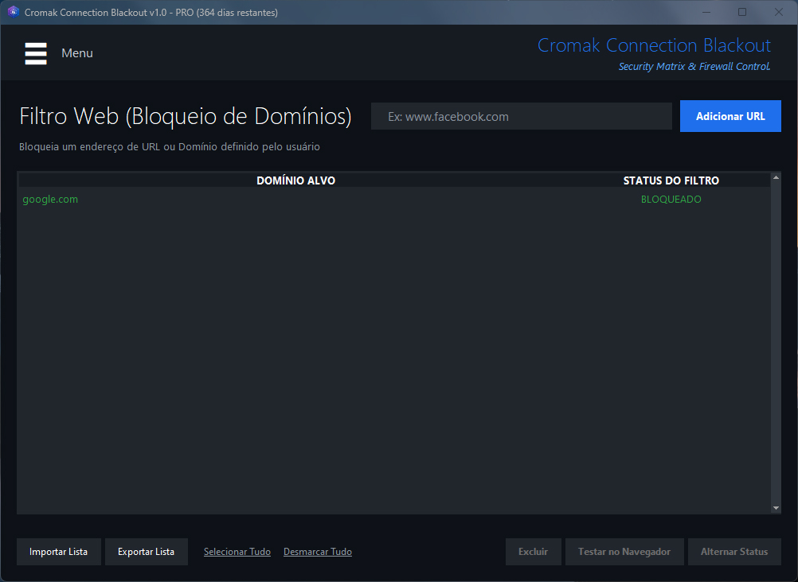
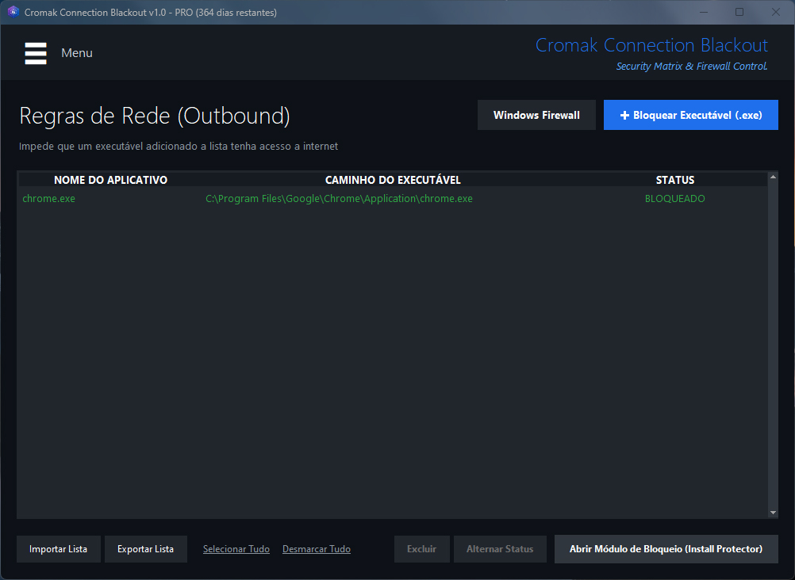
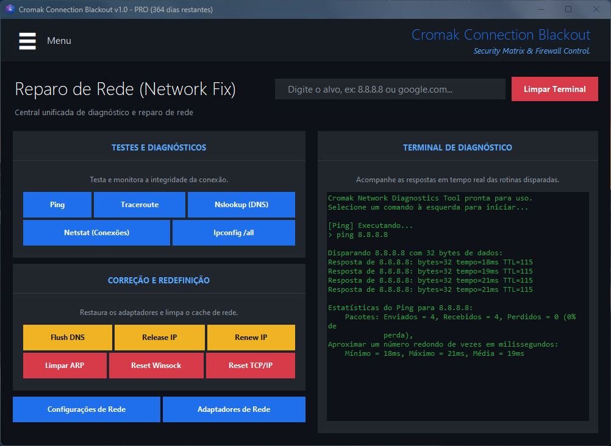
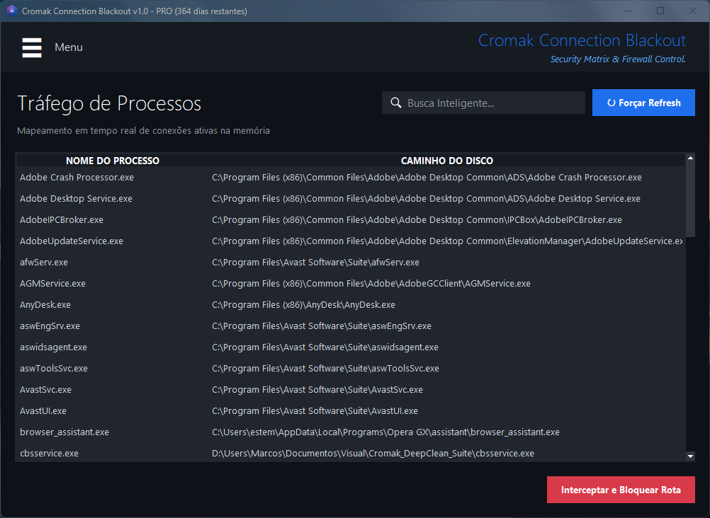
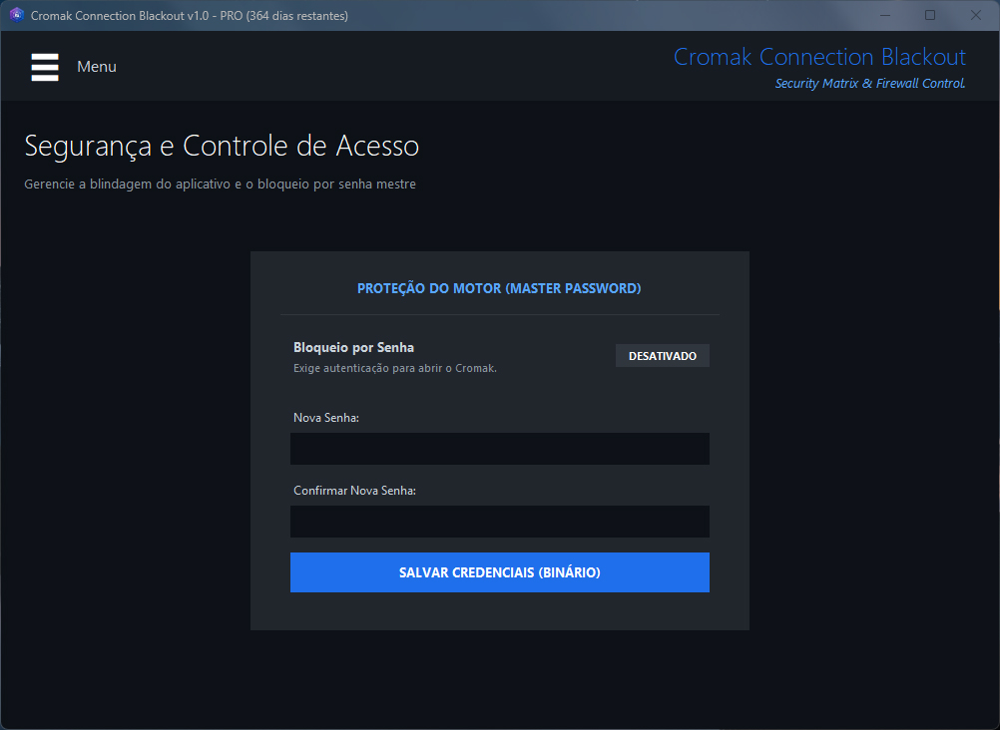
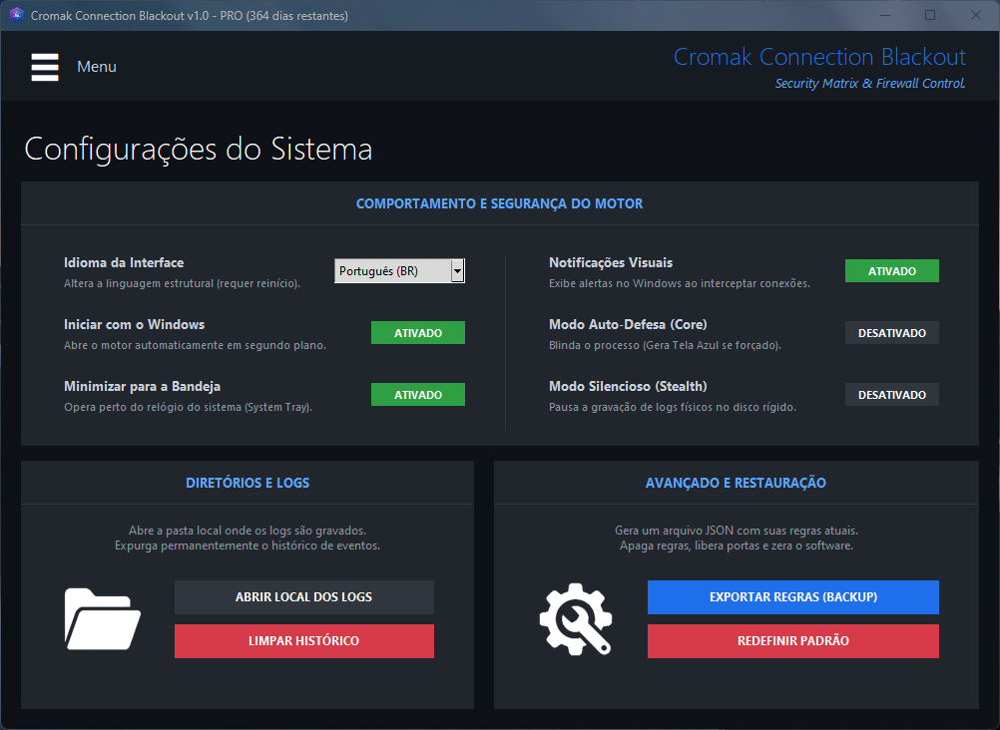

Cromak Connection Blackout
The military-grade tank disguised as a luxury firewall. Security Matrix & Firewall Control.
Version: 1.0 (build 2026.09)
Perfect for IT teams, laboratories, and administrators who demand total control over network traffic. Block unwanted software communications without the intimidating interfaces of traditional firewalls.

Your corporate network, completely under your control.
Market firewalls focus too much on geeks, presenting extremely confusing interfaces packed with ports and protocols that frighten the average user.
Cromak positions itself perfectly at the intersection: The raw power of a corporate firewall, paired with the usability of a modern dark-themed application and insanely lightweight performance. All at the click of a button.
The 4 Pillars of Our Architecture
-
🛡️ Dashboard & Global Kill Switch
Real-time overview indicating network usage (KB/s). In the event of an attack or data leak, the "Activate Blackout" button severs the machine's entire outbound traffic in 1 second.
-
🚫 Advanced & Flexible Web Filter
Block internet domains instantly and stealthily, with full support for importing and exporting JSON lists—perfect for mass-applying rules across dozens of PCs.
-
🧱 Outbound Rules Manager
Silence spywares and trackers by fully isolating your executables so they cannot communicate with the internet, keeping the rest of the system free and online.
-
🔧 Integrated Network Fix
The diagnostic terminal runs ping, traceroute, and DNS flush instantly within the application. It also includes TCP/IP port reset functions for paralyzed networks.
Explore the Interface
Click the images to expand and explore the system panels.

Domain Web Filter
Import a JSON file containing hundreds of malicious sites and apply instant batch blocks without manually modifying the Windows Firewall.

Outbound Rules (Executables)
Select software that shouldn't send telemetry or communicate with the internet, locking down their routes in seconds.

Network Fix
A clean panel for network route analysis (Traceroute) or simple Pings to test your connectivity with the world or gateways.

IP Connection Radar (Netstat)
Displays in real-time, every 2 seconds, exactly which applications and processes on the machine are talking to which destination IPs.

Kernel-Level Auto-Defense
Activate Auto-Defense and the Master Password to shield the application itself against malicious employees attempting to kill it via the Task Manager.

Real-Time Event Terminal
Keep track of all logs and security injections being printed to the console directly on the main Dashboard screen.
Choose the Perfect License for Your Network
Protect everything from your personal machine to your company's infrastructure.
Free Plan
- Connection Radar (Netstat)
- Access to Network Fix
- Executable Blocking (Limit of 5)
- Web Filter Inactive
- No Auto-Defense
- Kill Switch Locked
Personal PRO
- 1 Machine License (Lifetime)
- Unrestricted Web Filter
- Unlimited Outbound Rules
- Unlocked Auto-Defense Engine
- Full Access to Kill Switch
- Ideal for gamers and freelancers
Corporate (B2B)
- Package for up to 5 Machines
- Or $89 (Lifetime for 10 Machines)
- JSON Import/Export
- Priority B2B Support
- External Module Integration
- Ideal for Schools and Labs
System Requirements
Operating System
Windows 10 / 11 (x64)
Processor
Dual-Core (1.0 GHz or higher)
RAM
1 GB Minimum (Extremely Lightweight)
Storage
30 MB of free disk space
Initial Privileges
Administrator (Required for netsh)
Frequently Asked Questions
Does it alter my machine's DNS servers for the web filter?
Cromak utilizes local host file poisoning and editing methods to perform false domain resolution in fractions of a millisecond. This makes it incredibly faster than relying on external DNS resolutions and guarantees total blocking regardless of which Wi-Fi you are connected to.
How does JSON list importing work in the Web Filter?
With the corporate license, simply export your allowed/blocked sites list on the master machine. After that, you can distribute the same small `.json` file to dozens of workstations, standardizing the environment's security.
Do you collect information on the URLs I browse?
Not at all. Our application has ZERO telemetry, does not monitor HTTP/HTTPS traffic, and operates offline. The IP Netstat radar analyzes the raw socket flow via PSUTIL and flushes the memory after 2 seconds, promoting 100% Privacy By Design.